Genomic Data: Wrappers, Hi-C, and File Connections
Source:vignettes/genomic-data.Rmd
genomic-data.RmdWrapper functions assemble common genomic visualisations from the
primitive elements. Each returns a seq_plot that can be
composed further with %+%, %|%,
%__% or seq_resolve(). Pass unique
track_id values to each wrapper to avoid collisions when
resolving several plots into one figure.
library(SeqPlotR)
#>
#> Attaching package: 'SeqPlotR'
#> The following object is masked from 'package:base':
#>
#> %||%
library(GenomicRanges)
#> Loading required package: stats4
#> Loading required package: BiocGenerics
#> Loading required package: generics
#>
#> Attaching package: 'generics'
#> The following objects are masked from 'package:base':
#>
#> as.difftime, as.factor, as.ordered, intersect, is.element, setdiff,
#> setequal, union
#>
#> Attaching package: 'BiocGenerics'
#> The following objects are masked from 'package:stats':
#>
#> IQR, mad, sd, var, xtabs
#> The following objects are masked from 'package:base':
#>
#> anyDuplicated, aperm, append, as.data.frame, basename, cbind,
#> colnames, dirname, do.call, duplicated, eval, evalq, Filter, Find,
#> get, grep, grepl, is.unsorted, lapply, Map, mapply, match, mget,
#> order, paste, pmax, pmax.int, pmin, pmin.int, Position, rank,
#> rbind, Reduce, rownames, sapply, saveRDS, table, tapply, unique,
#> unsplit, which.max, which.min
#> Loading required package: S4Vectors
#>
#> Attaching package: 'S4Vectors'
#> The following object is masked from 'package:utils':
#>
#> findMatches
#> The following objects are masked from 'package:base':
#>
#> expand.grid, I, unname
#> Loading required package: IRanges
#> Loading required package: Seqinfo
# simulated scenarios: copy-number segments per scenario
sim <- function(sc, f) utils::read.delim(system.file("extdata", "sim", sc, f, package = "SeqPlotR"))
scen <- c(bfb = "bfb", wgd = "wgd", ct = "ct", ct_bfb = "ct_bfb")
segs <- lapply(scen, sim, f = "segments.tsv")Copy number and ChIP
seq_copynumber()
Single-sample CN scatter coloured by integer state, with an optional
segmentation overlay. cn_col falls back through
c("cn", "copy_number", "CN", "state", "integer_cn") and
ratio_col through
c("log2ratio", "logR", "log2R", "ratio", "log2_ratio").
The example is a simulated tumour with chromothripsis and
breakage-fusion-bridge amplification on chr4. The simulation provides
copy-number segments but no read-level ratios, so the points are 100 kb
bins across chr4:55-125 Mb. Each bin takes the copy number of the
segment containing it and a log2 ratio of log2(cn / 2), the
ratio expected for that copy number against a diploid reference, so copy
number 2 sits at 0 and copy number 1 at -1. The segment overlay uses the
same ratio computed once per segment.
sg <- segs$ct_bfb
win_cn <- GRanges("chr4", IRanges(5.5e7, 1.25e8))
# 100 kb bins labelled by the overlapping segment
bin_start <- seq(5.5e7, 1.25e8 - 1e5, by = 1e5)
bins <- GRanges("chr4", IRanges(bin_start, width = 1e5))
seg_gr <- GRanges(sg$chrom, IRanges(sg$start, sg$end), cn = sg$cn,
seg_mean = log2(sg$cn / 2))
hit <- findOverlaps(bins, seg_gr, select = "first")
bins$cn <- seg_gr$cn[hit]
bins$log2ratio <- log2(bins$cn / 2)
p <- seq_copynumber(bins, windows = win_cn,
segment_data = seg_gr, segment_col = "seg_mean")
p$plot()
#> 5 out-of-bounds data points excluded! (seq_segment)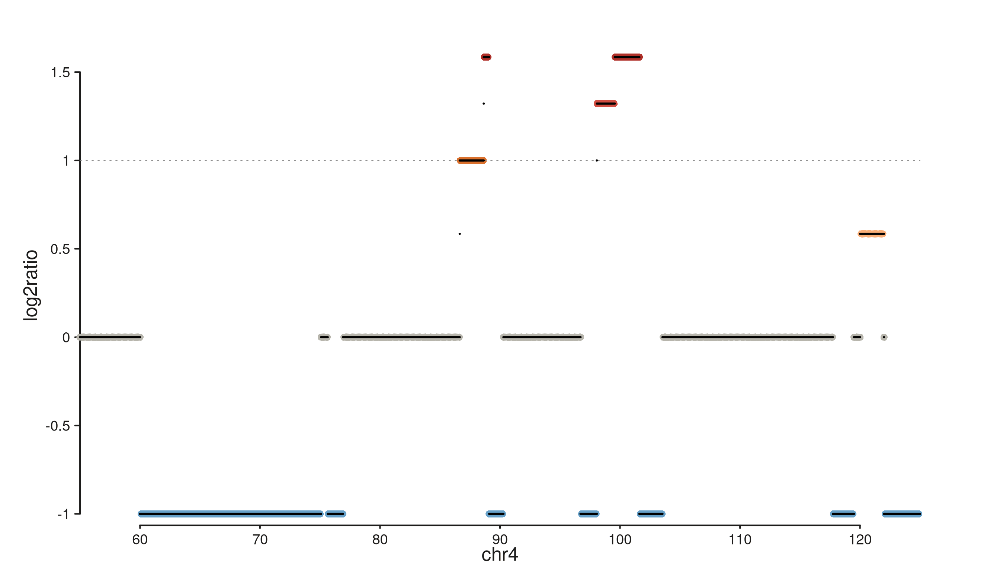
seq_cn_heatmap()
Multi-sample CN heatmap with one row per sample and tiles coloured by
CN state. The rows here are the four simulated scenarios, each covering
different chromosomes: the chr2 amplicon (bfb), chr1-3
after genome doubling (wgd), chromothripsis on chr3
(ct) and chromothripsis with amplification on chr4
(ct_bfb). One window per chromosome puts every scenario on
a shared chr1-chr4 layout, so each row has tiles only where that
scenario has segments.
cnh_gr <- do.call(c, unname(Map(function(s, nm) {
GRanges(s$chrom, IRanges(s$start, s$end), sample = nm, cn = s$cn)
}, segs, names(segs))))
#> Warning in .merge_two_Seqinfo_objects(x, y): The 2 combined objects have no sequence levels in common. (Use
#> suppressWarnings() to suppress this warning.)
win_hm <- GRanges(paste0("chr", 1:4),
IRanges(1, c(248956422, 242193529, 198295559, 190214555)))
p <- seq_cn_heatmap(cnh_gr, windows = win_hm,
sample_col = "sample", cn_col = "cn",
sample_order = names(segs))
p$plot()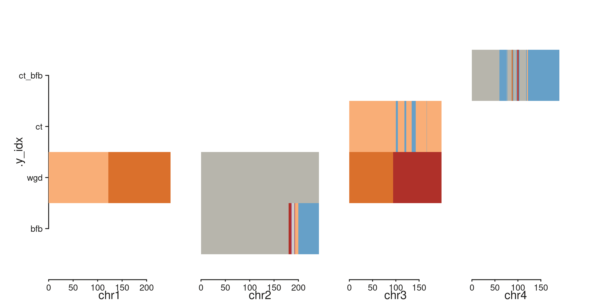
seq_chip()
ChIP-style signal and peak tracks. data is a named list
of GRanges (one per sample) or a single
GRanges with a sample column.
make_sig <- function(nm) {
g <- GRanges("chr1",
IRanges(sort(sample(1:1e6, 400)), width = 500),
score = rexp(400, rate = 0.15))
S4Vectors::mcols(g)$sample <- nm
g
}
sig <- list(Rad21 = make_sig("Rad21"), NippedB = make_sig("NippedB"))
peaks <- list(Rad21 = GRanges("chr1", IRanges(sort(sample(1:1e6, 20)), width = 2000)),
NippedB = GRanges("chr1", IRanges(sort(sample(1:1e6, 15)), width = 2000)))
p <- seq_chip(sig, peaks = peaks,
windows = GRanges("chr1", IRanges(1, 1e6)))
p$plot()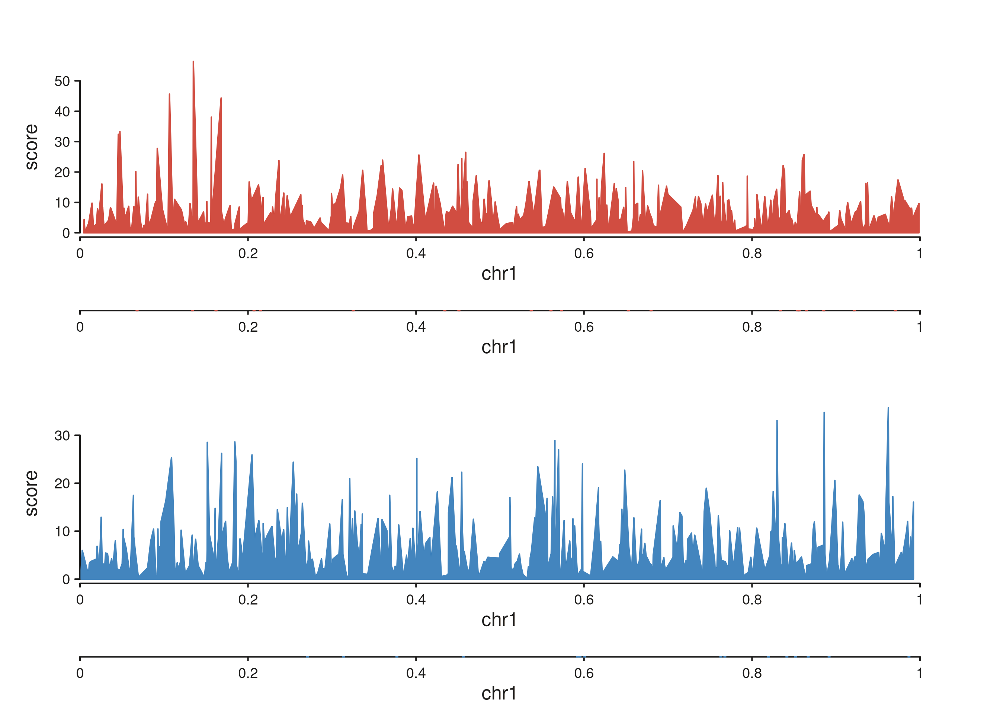
Hi-C
seq_hic() renders contact matrices in four styles. Each
call produces one seq_plot with a single track; combine
styles or regions by calling it several times and composing with
seq_resolve().
Synthetic data
A simple contact simulator: every upper-triangular bin pair
(i, j) gets strength
exp(-distance * decay_rate) * lognormal(noise), then is
mirrored to (j, i).
# contact simulator
generate_hic_matrix <- function(n_bins, decay_rate = 0.2) {
ij <- expand.grid(i = seq_len(n_bins), j = seq_len(n_bins))
upper <- ij$j >= ij$i
ij <- ij[upper, , drop = FALSE]
d <- ij$j - ij$i
s <- pmax(0.01, exp(-d * decay_rate) * rlnorm(nrow(ij), 0, 0.3))
upper_df <- data.frame(bin_i = ij$i, bin_j = ij$j, strength = s)
off <- d > 0
lower_df <- data.frame(bin_i = ij$j[off], bin_j = ij$i[off],
strength = s[off])
rbind(upper_df, lower_df)
}
# seq_hic-shaped GRanges for a single region
hic_region <- function(chrom, start, end, bin_size, decay = 0.2,
seed = NULL) {
if (!is.null(seed)) set.seed(seed)
bin_starts <- seq(start, end - bin_size, by = bin_size)
n <- length(bin_starts)
mat <- generate_hic_matrix(n, decay_rate = decay)
GRanges(chrom,
IRanges(bin_starts[mat$bin_i], width = bin_size),
i_start = bin_starts[mat$bin_i],
i_end = bin_starts[mat$bin_i] + bin_size,
j_start = bin_starts[mat$bin_j],
j_end = bin_starts[mat$bin_j] + bin_size,
score = mat$strength)
}
# Multi-region: per-chromosome intra-chrom matrices, concatenated.
hic_multi <- function(regions, bin_size, decay = 0.2, base_seed = 100) {
parts <- lapply(seq_along(regions), function(k) {
r <- regions[[k]]
hic_region(r[[1]], r[[2]], r[[3]], bin_size,
decay = decay, seed = base_seed + k)
})
suppressWarnings(do.call(c, parts))
}Styles
full and diagonal keep both axes genomic.
triangle and rectangle rotate by 45 degrees so
y is interaction distance; max_dist caps that axis.
triangle is the usual browser-style view,
rectangle suits fine resolutions where only short-range
contacts matter, diagonal drops the redundant lower
triangle of full.
gr <- hic_region("chr1", 40e6, 45e6, bin_size = 1e5, decay = 0.25,
seed = 1)
win <- GRanges("chr1", IRanges(40e6, 45e6))
seq_hic(gr, windows = win, style = "full")$plot()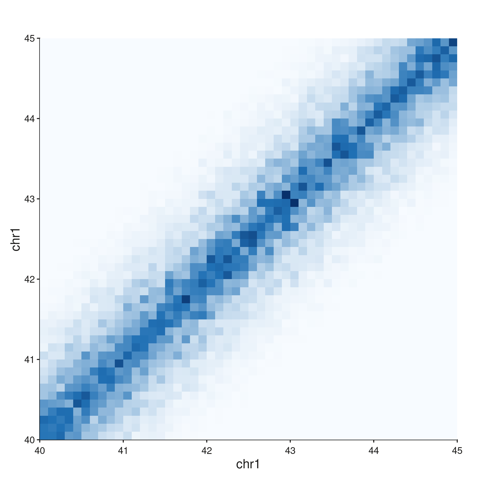
seq_hic(gr, windows = win, style = "diagonal")$plot()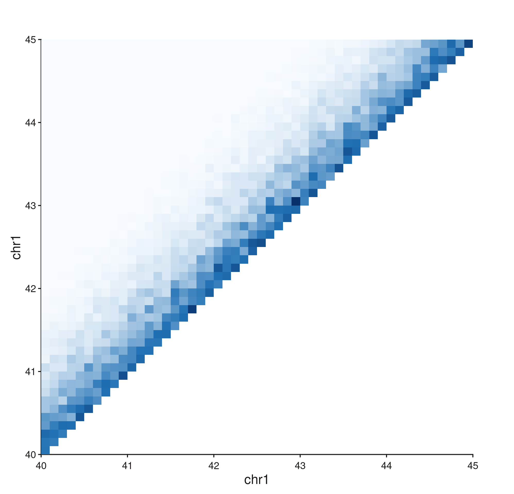
seq_hic(gr, windows = win, style = "triangle")$plot()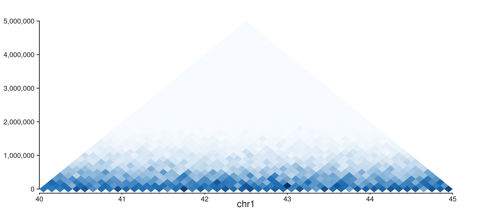
seq_hic(gr, windows = win, style = "rectangle", max_dist = 2e6)$plot()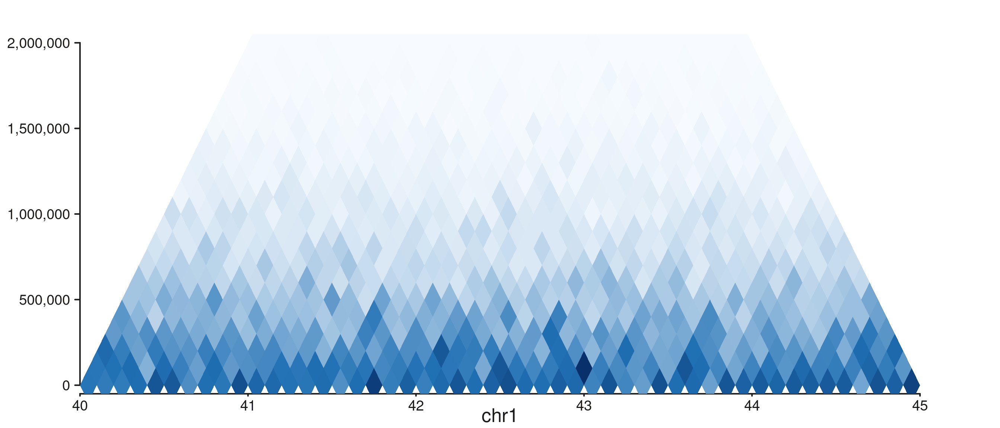
Multiple regions on x
A multi-range windows places each range in its own panel
sharing the y axis. All four styles work this way.
regs <- list(list("chrA", 0, 3e6),
list("chrB", 0, 3e6),
list("chrC", 0, 3e6))
gr_multi <- hic_multi(regs, bin_size = 1e5, decay = 0.25)
win_multi <- GRanges(c("chrA", "chrB", "chrC"),
IRanges(c(1, 1, 1), c(3e6, 3e6, 3e6)))
seq_hic(gr_multi, windows = win_multi, style = "triangle")$plot()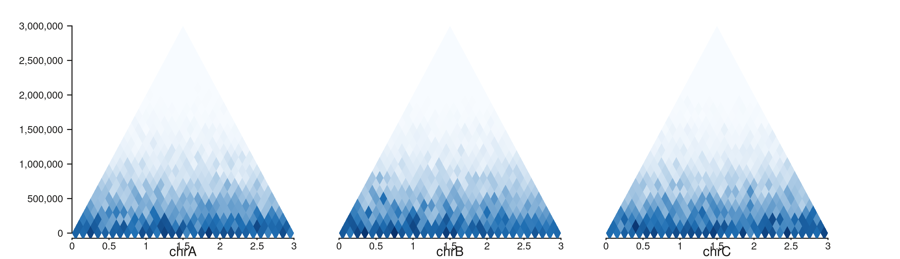
Multiple regions on y
y_windows sets the genomic y-axis for full
and diagonal independently of windows. A
multi-region GRanges stacks y sub-panels, each with its own
axis. Inter-chromosomal contacts need a j_chrom mcols
column giving the j-bin chromosome.
# x: chr1 (1 region). y: stacked chrA + chrB (2 regions).
# Mixed contact set: chr1×chr1 (intra), chr1↔chrA, chr1↔chrB.
set.seed(7)
n_per <- 250
i_st <- sort(sample(seq(1, 4e6 - 1e5, by = 1e5), n_per, replace = TRUE))
mk <- function(j_chrom) data.frame(
i_chrom = "chr1",
i_start = i_st, i_end = i_st + 1e5,
j_chrom = j_chrom,
j_start = sort(sample(seq(1, 4e6 - 1e5, by = 1e5), n_per, replace = TRUE)),
score = rexp(n_per, rate = 0.4),
stringsAsFactors = FALSE
)
df <- rbind(mk("chrA"), mk("chrB"))
df$j_end <- df$j_start + 1e5
gr_multiy <- GRanges(
df$i_chrom, IRanges(df$i_start, df$i_end),
i_start = df$i_start, i_end = df$i_end,
j_chrom = df$j_chrom, j_start = df$j_start, j_end = df$j_end,
score = df$score
)
win_x_one <- GRanges("chr1", IRanges(1, 4e6))
win_y_two <- GRanges(c("chrA", "chrB"), IRanges(c(1, 1), c(4e6, 4e6)))
seq_hic(gr_multiy,
windows = win_x_one,
y_windows = win_y_two,
style = "full")$plot()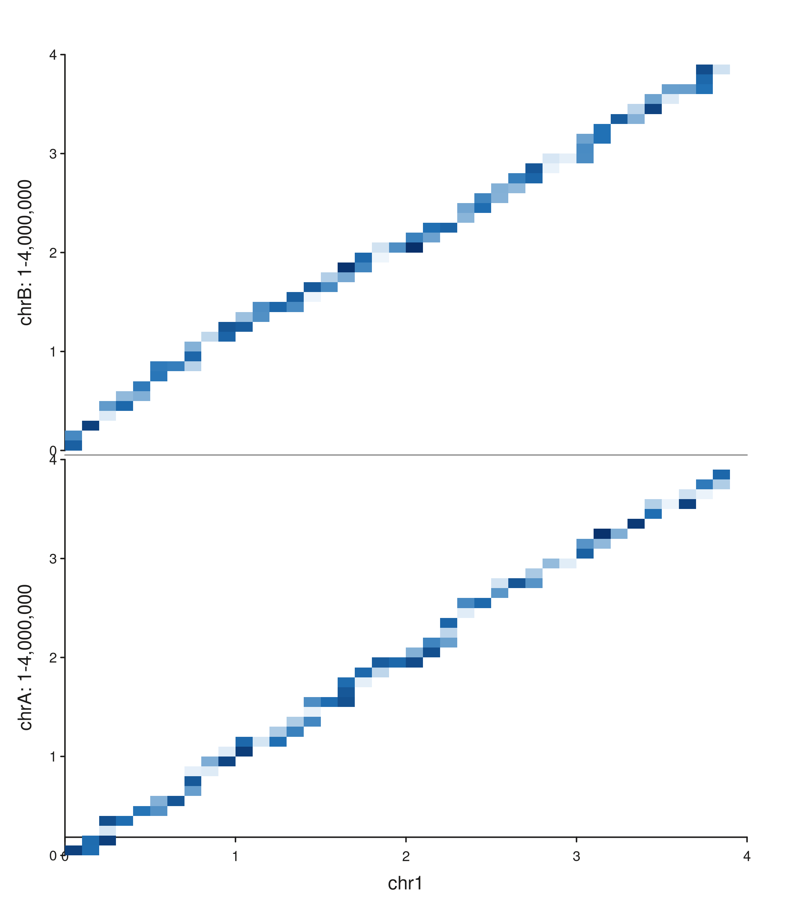
Combining windows
combine_windows = TRUE concatenates the x regions into
one virtual panel so cross-window contacts (for example a translocation)
appear in a single view. It is implemented at seq_track()
level, so every track type supports it. combine_y_windows
does the same on y.
# Two-region data: intra-chr14, intra-chr5, plus a "translocation"
# band of inter-chromosomal contacts concentrated near a breakpoint.
set.seed(11)
bs <- 1e5 # bin size
mk_intra <- function(chrom, start, end, decay = 0.25, seed_off = 0) {
starts <- seq(start, end - bs, by = bs)
n <- length(starts)
set.seed(seed_off)
mat <- generate_hic_matrix(n, decay_rate = decay)
data.frame(i_chrom = chrom, i_start = starts[mat$bin_i],
i_end = starts[mat$bin_i] + bs,
j_chrom = chrom, j_start = starts[mat$bin_j],
j_end = starts[mat$bin_j] + bs,
score = mat$strength,
stringsAsFactors = FALSE)
}
mk_inter <- function(c1, s1, e1, c2, s2, e2, n = 200, focus = c(0.4, 0.7)) {
i_st <- s1 + round(runif(n, focus[1], focus[2]) * (e1 - s1) / bs) * bs
j_st <- s2 + round(runif(n, focus[1], focus[2]) * (e2 - s2) / bs) * bs
rbind(
data.frame(i_chrom = c1, i_start = i_st, i_end = i_st + bs,
j_chrom = c2, j_start = j_st, j_end = j_st + bs,
score = rexp(n, rate = 0.4) + 0.5,
stringsAsFactors = FALSE),
data.frame(i_chrom = c2, i_start = j_st, i_end = j_st + bs,
j_chrom = c1, j_start = i_st, j_end = i_st + bs,
score = rexp(n, rate = 0.4) + 0.5,
stringsAsFactors = FALSE)
)
}
intra14 <- mk_intra("chr14", 98e6, 100e6, seed_off = 1)
intra5 <- mk_intra("chr5", 170e6, 172e6, seed_off = 2)
inter <- mk_inter("chr14", 98e6, 100e6, "chr5", 170e6, 172e6, n = 250)
all_df <- rbind(intra14, intra5, inter)
gr_combined <- GRanges(
all_df$i_chrom, IRanges(all_df$i_start, all_df$i_end),
i_start = all_df$i_start, i_end = all_df$i_end,
j_chrom = all_df$j_chrom, j_start = all_df$j_start, j_end = all_df$j_end,
score = all_df$score
)
win_combined <- GRanges(c("chr14", "chr5"),
IRanges(c(98e6, 170e6), c(100e6, 172e6)))
seq_hic(gr_combined,
windows = win_combined,
style = "triangle",
combine_windows = TRUE,
palette = "reds")$plot()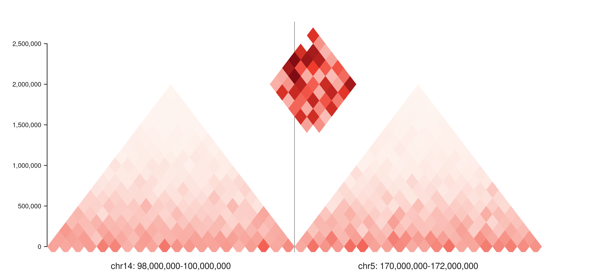
seq_hic(gr_combined,
windows = win_combined,
y_windows = win_combined,
style = "full",
combine_windows = TRUE,
combine_y_windows = TRUE,
palette = "reds")$plot()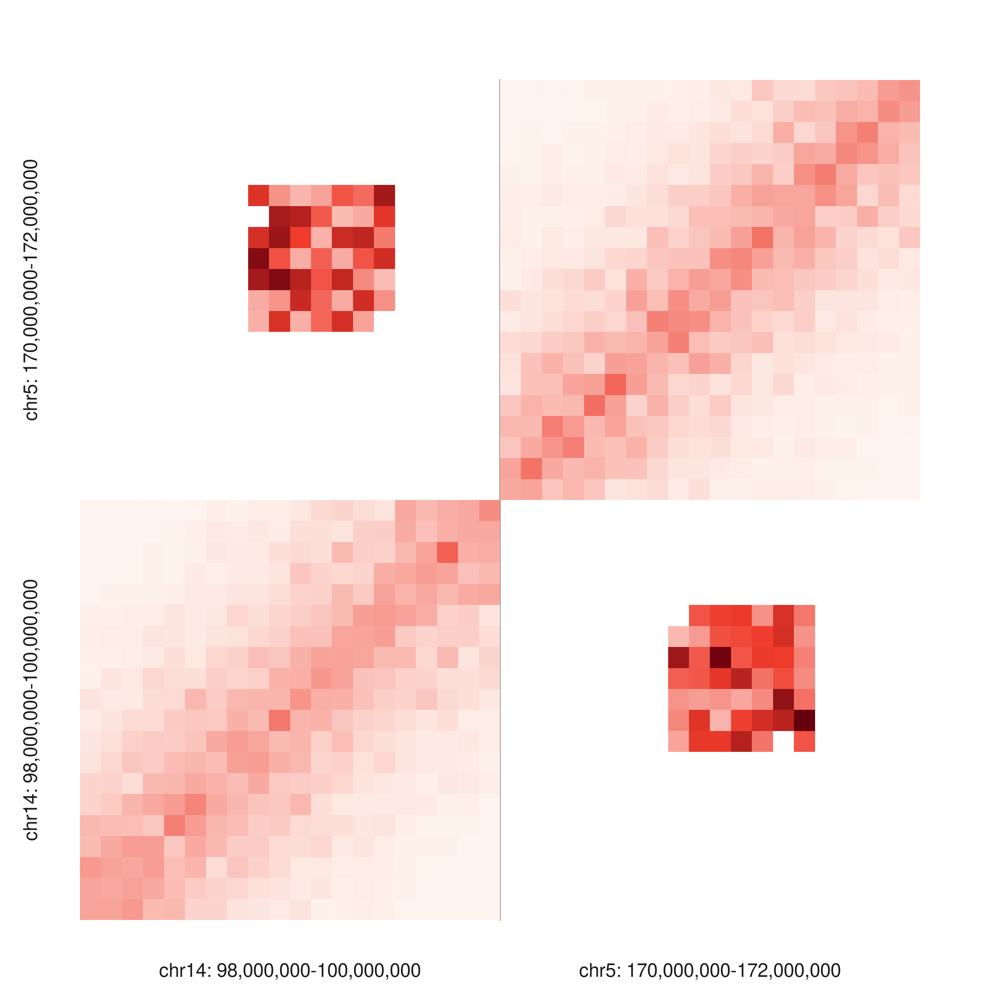
Region grids
For a matrix-of-matrices view, build one seq_hic() per
cell and arrange them with a layout string and
seq_resolve(). The diagonal cells are intra-chromosomal;
the off-diagonals are the asymmetric views.
# Two-region intra-chrom data plus a contrived "off-diagonal" view.
gr_A <- hic_region("chrA", 0, 3e6, bin_size = 1e5, decay = 0.20, seed = 11)
gr_B <- hic_region("chrB", 0, 3e6, bin_size = 1e5, decay = 0.30, seed = 12)
win_A <- GRanges("chrA", IRanges(1, 3e6))
win_B <- GRanges("chrB", IRanges(1, 3e6))
layout <- "
AB
CD
"
p_AA <- seq_hic(gr_A, windows = win_A, style = "full",
track_id = "A")
p_AB <- seq_hic(gr_A, windows = win_A, y_windows = win_B,
style = "full", track_id = "B")
p_BA <- seq_hic(gr_B, windows = win_B, y_windows = win_A,
style = "full", track_id = "C")
p_BB <- seq_hic(gr_B, windows = win_B, style = "full",
track_id = "D")
fig <- seq_plot(layout = layout)
fig <- seq_resolve(fig, p_AA, p_AB, p_BA, p_BB)
fig$plot()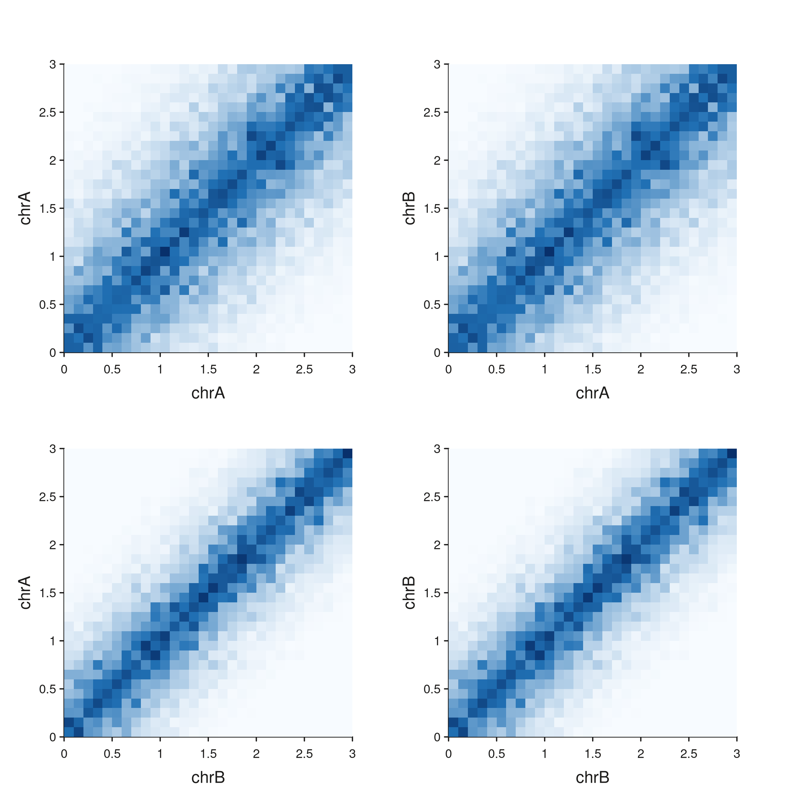
Flipping axes
flip_x and flip_y mirror an axis, with tick
labels following. A downward triangle under another track is the common
use.
seq_hic(gr, windows = win, style = "triangle",
flip_y = TRUE)$plot()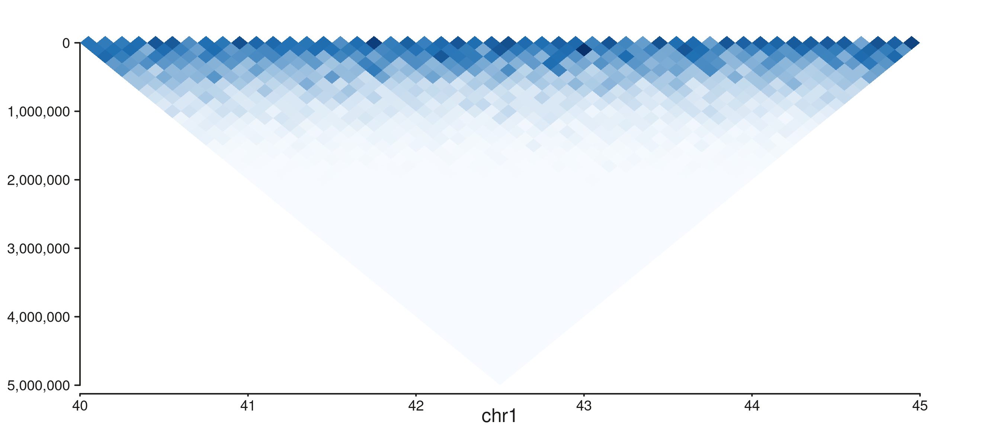
seq_hic(gr, windows = win, style = "full",
flip_x = TRUE)$plot()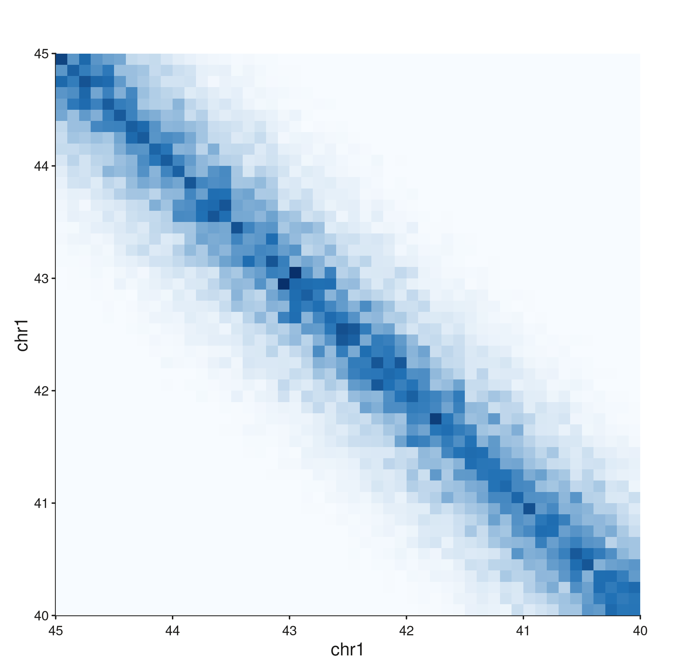
Two samples back-to-back, the second flipped so its peak meets the first:
p_top <- seq_hic(gr, windows = win, style = "triangle",
track_id = "top")
p_bottom <- seq_hic(gr, windows = win, style = "triangle",
flip_y = TRUE, track_id = "bottom")
seq_resolve(seq_plot(), p_top, p_bottom)$plot()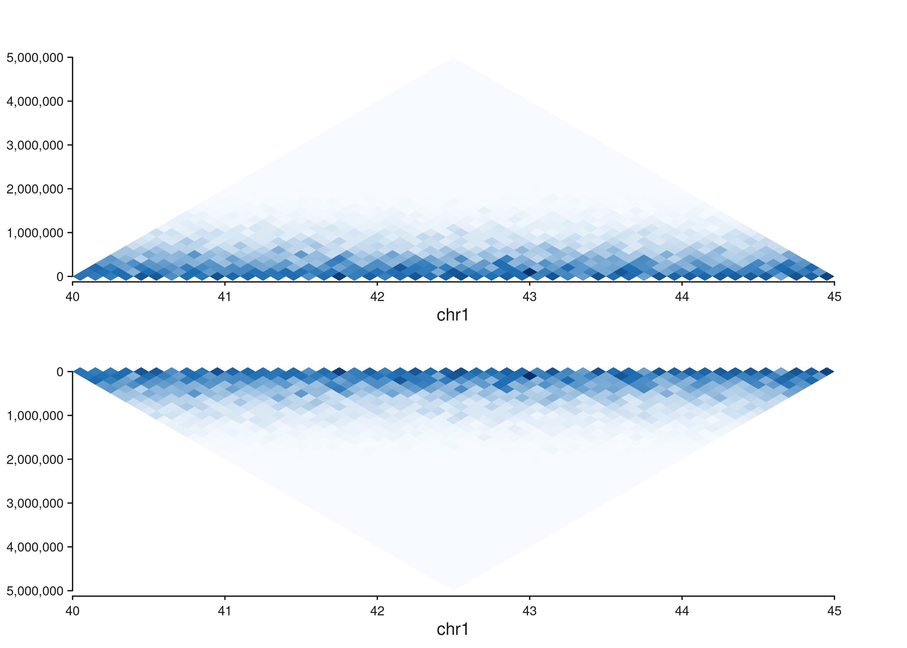
With annotation tracks
Rotated styles share the x axis with annotation tracks, so
seq_resolve() or the operator chain stacks them
directly.
# Synthetic gene track for the same window.
genes <- GRanges("chr1",
IRanges(start = c(40.5e6, 41.4e6, 42.6e6, 43.5e6, 44.2e6),
width = c(1.2e5, 2.0e5, 8e4, 1.5e5, 9e4)),
gene = paste0("g", 1:5),
type = "exon",
strand = c("+", "-", "+", "+", "-"))
p_hic <- seq_hic(gr, windows = win, style = "triangle",
track_id = "HiC")
p_genes <- seq_plot() %+%
seq_track(data = genes, windows = win, track_id = "Genes",
track_height = 0.4) %+%
seq_gene(map(group = gene, type = type, strand = strand,
label = gene))
seq_resolve(seq_plot(), p_hic, p_genes)$plot()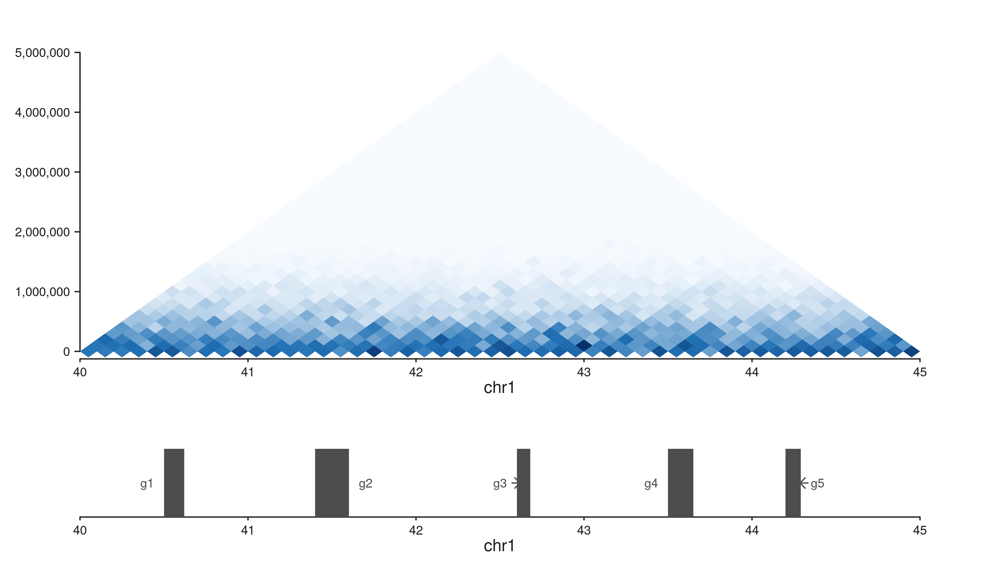
File connections
open_bigwig(), open_bam() and
open_hic() return lightweight connection objects. Each
probes the file header at construction, records a per-format
max_fetch_bp guardrail, and exposes
$fetch(region) to pull only the requested span. The
guardrail fires before any I/O, so an overly wide span raises an error
rather than loading a whole chromosome.
bw <- open_bigwig("path/to/signal.bw")
bw # <SeqBigWig> ... max_fetch_bp: 50,000,000
sig <- bw$fetch(GRanges("chr1", IRanges(1, 1e6))) # GRanges of signal
bam <- open_bam("path/to/aln.bam")
bam$fetch(GRanges("chr1", IRanges(20363000, 20370000)))
hic <- open_hic("path/to/contacts.hic", resolution = 25000)
hic$fetch(GRanges("chr1", IRanges(1e7, 1.1e7)))open_hic()$fetch() accepts a multi-range
region: each range yields its own intra-region contact
submatrix and the results are concatenated into one BEDPE data frame
carrying seqnames1 / seqnames2. The
max_fetch_bp check applies per range (default 280 Mb).
is_seq_file_conn(list()) # FALSE
#> [1] FALSE
is_seq_file_conn("path/to/file.bw") # FALSE
#> [1] FALSE
seq_reads() — alignment view
seq_reads() loads alignments from an indexed BAM at
construction, packs them into rows by insert length (or start), and
draws chevron polygons (right for +, left for
-). Mate pairs share a row and are joined by a thin line.
The max_width guardrail (default 100 kb) fires before any
BAM I/O.
win <- GRanges("chr1", IRanges(20363000, 20370000))
reads <- seq_reads("path/to/aln.bam", win,
sort_by = "insert_length",
link_mates = TRUE)
seq_plot() %+%
(seq_track(windows = win, height = 4) %+% reads)The demo below runs only when SEQPLOTR_DEMO_BAM points
to an indexed BAM and Rsamtools and GenomicAlignments are installed.